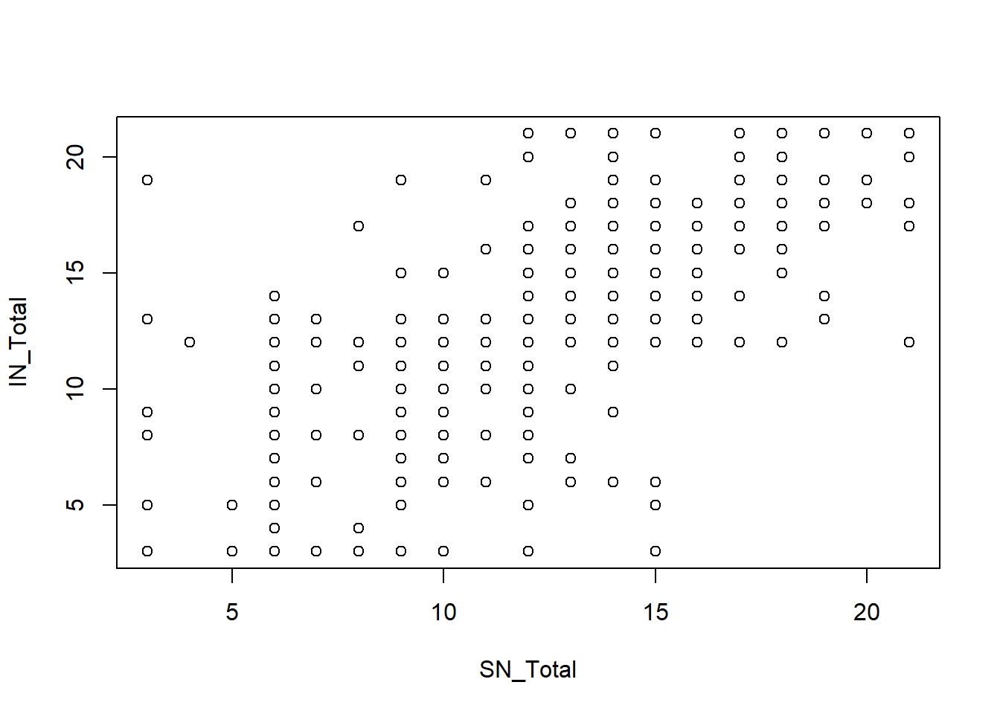
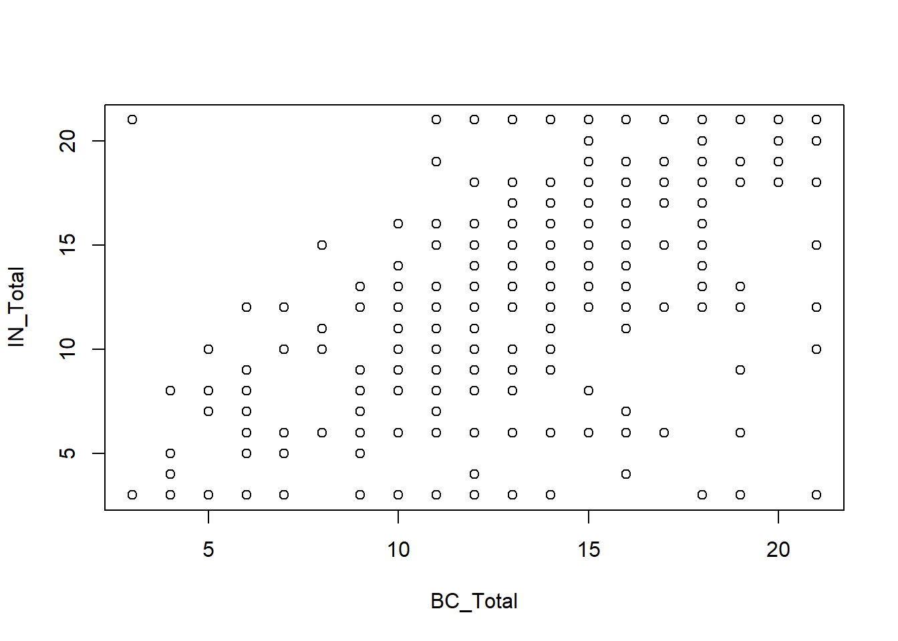
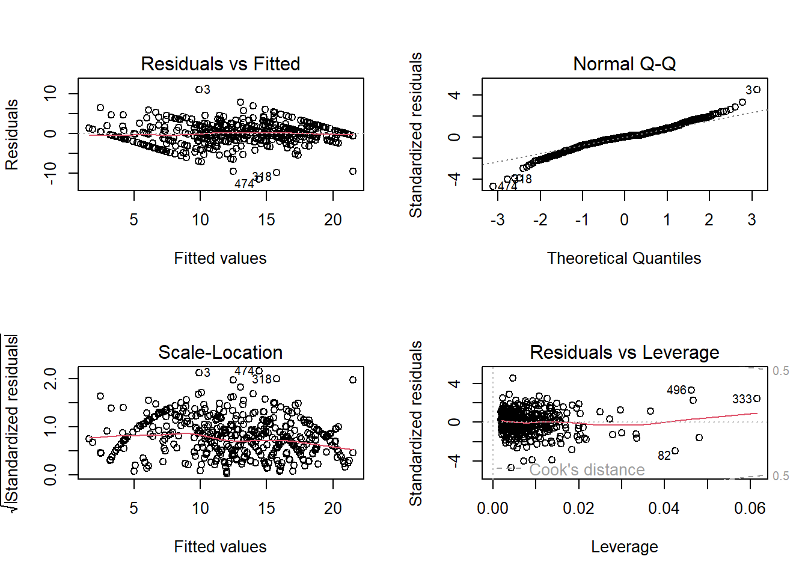

library("foreign")
library(ggplot2)
library(dplyr)
library(broom)
library(ggpubr)
library(tidyverse)
library(readr)
library(car)Determinants of COVID-19 vaccination intention
Multiple linear regression
COVID-19
Search the determinants of COVID-19 vaccination intention using multiple regression analysis
Research information
Original Research: Reactance and perceived disease severity as determinants of COVID-19 vaccination intention: An application of the theory of planned behavior
Authors: Dariusz Drążkowski, Radosław Trepanowski, Adam Mickiewicz
Year: 2021
Sample: 551 Polish participants
DOI: https://doi.org/10.1080/13548506.2021.2014060
Multiple Regression Analysis: Step by step
Problem: What are the determinants of COVID-19 vaccination intention?
Objective: To identify the determinants of COVID-19 vaccination through an application of the Theory of Planned Behavior.
Hypothesis: H1: Control beliefs have a direct impact on COVID-19 vaccination intention H2: Utility beliefs have a direct impact on COVID-19 vaccination intention H3: Social norm beliefs have a direct impact on COVID-19 vaccination intention
Steps to prove the hypothesis
A. Model Evaluation
- Regression coeficients and r-square
- Interpretation
B. Regression Model Assumtions
- Lineality between IVs and Dv
- Independence of observations: The observation from our model are independent.
- Homoscedasticity: The errors from our model have equal variance.
- Normality of Errors: The errors from our model are normally distributed.
- Multicollinality: evaluate if the IVs are redundant.
Load the packages
A. Model Evaluation
A1. Regression coeficients and r-square
Load the database
Mydata=read.spss("data/COVID_data.sav",to.data.frame=T,use.value.labels=FALSE)
summary(Mydata$SE_Total) Min. 1st Qu. Median Mean 3rd Qu. Max.
3.00 12.00 15.00 15.42 18.00 21.00 Perform the linear regression analysis
Intention_lm <- lm(IN_Total ~ SN_Total + BC_Total + AT_Total, data = Mydata)
summary(Intention_lm)
Call:
lm(formula = IN_Total ~ SN_Total + BC_Total + AT_Total, data = Mydata)
Residuals:
Min 1Q Median 3Q Max
-11.4622 -1.2412 0.1199 1.3464 11.0907
Coefficients:
Estimate Std. Error t value Pr(>|t|)
(Intercept) -1.71571 0.36855 -4.655 4.07e-06 ***
SN_Total 0.36218 0.03976 9.109 < 2e-16 ***
BC_Total 0.29052 0.03483 8.341 6.00e-16 ***
AT_Total 0.45369 0.03504 12.946 < 2e-16 ***
---
Signif. codes: 0 '***' 0.001 '**' 0.01 '*' 0.05 '.' 0.1 ' ' 1
Residual standard error: 2.457 on 547 degrees of freedom
Multiple R-squared: 0.7865, Adjusted R-squared: 0.7853
F-statistic: 671.5 on 3 and 547 DF, p-value: < 2.2e-16A2. Interpretation
Bs ajusted:
For each point obtained in the scale of subjective norms, the intenton to COVID-19 vaccination intention will increase 0.36 points. Also, subjective norms had a direct effect on COVID-19 vaccination intention it was statistically significant.
For each point obtained in the scale of Behavioral Control, the intenton to COVID-19 vaccination intention will increase 0.29 points. Also, Behavioral Control had a direct effect on COVID-19 vaccination intention and it was statistically significant.
For each point obtained in the scale of Attitude Toward Covid-19 vaccination, the intenton to COVID-19 vaccination intention will increase 0.45 points. Also, Attitude Toward Covid-19 vaccination had a direct effect on COVID-19 vaccination intention and statistical significance.
The model with these three determinants explain 78% of variance of COVID-19 vaccination intention.
B. Regression Model Assumtions
B1. Lineality between IVs and Dv
plot(IN_Total ~ SN_Total, data = Mydata)
plot(IN_Total ~ BC_Total, data = Mydata)
plot(IN_Total ~ AT_Total, data = Mydata)
B2. Independence of observations
The observation from our model are independent.
This was fulfilled when each observation was made by one participant.
B3. Homocedasticity
The errors from our model have equal variance.
par(mfrow=c(2,2))
plot(Intention_lm)
par(mfrow=c(1,1))B4. Normality of Errors
The errors from our model are normally distributed.
par(mfrow=c(2,2))
plot(Intention_lm)
par(mfrow=c(1,1))B5. Multicollinality: evaluate if the IVs are redundant.
vif(Intention_lm)SN_Total BC_Total AT_Total
2.984366 1.899331 2.991759